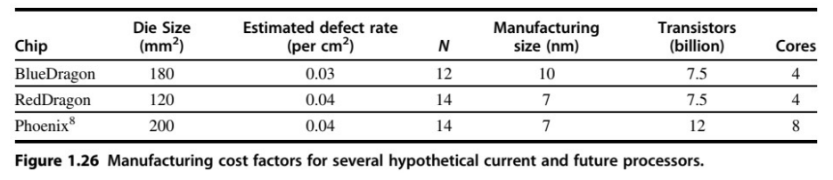
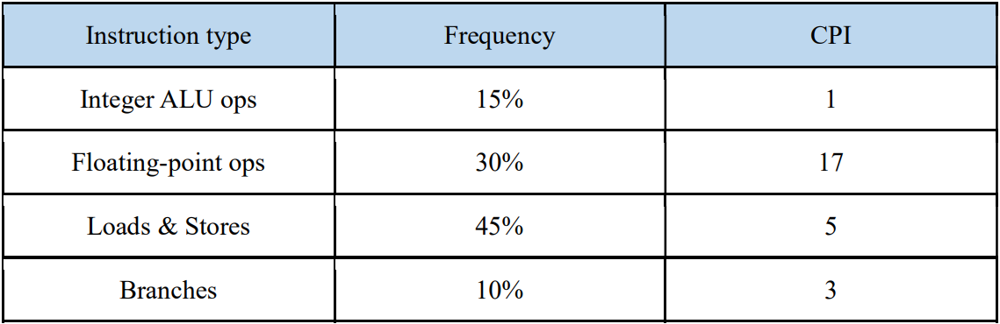
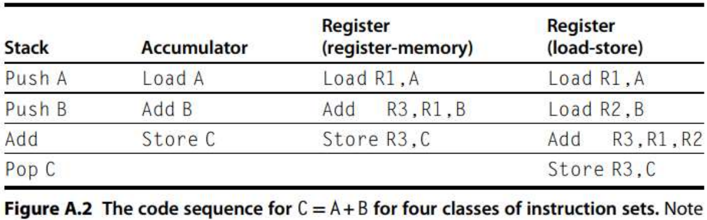

Computer Architecture
Practice⚓︎
Ch1&AppA⚓︎
Q1: (§1-6 Cost)⚓︎
Info
Many factors are involved in the price of a computer chip. Intel is spending $7 billion to complete its Fab 42 fabrication facility for 7 nm technology. In this case study, we explore a hypothetical company in the same situation and how different design decisions involving fabrication technology, area, and redundancy affect the cost of chips. The company will sell a range of chips from that factory, and it needs to decide how much capacity to dedicate to each chip. Imagine that it will sell two chips. Phoenix is a completely new architecture designed with 7 nm technology in mind, whereas RedDragon is the same architecture as their 10 nm BlueDragon. Imagine that RedDragon will make a profit of $15 per defect-free chip. Phoenix will make a profit of $30 per defect-free chip. Each wafer has a 450 mm diameter. Assume that the wafer yield is 0.9 and refer to Figure 1.26 for more detailed information. 
Question (a)
How much profit do you make on each wafer of Phoenix chips?
Answer (a)
Question (b)
How much profit do you make on each wafer of RedDragon chips?
Answer (b)
Question (c)
If your demand is 50,000 RedDragon chips per month and 25,000 Phoenix chips per month, and your facility can fabricate 100 wafers a month, how many wafers should you make of each chip? Why?
Answer (c)
因為RedDragonChips產值比較高，所以先製造RedDragonChips，而RedDragonChips需要227片wafer，所以即使我們每個月能生產100片wafer給RedDragonChips，仍然無法滿足兩種chips的所有需求。
Q2: (§1-5 Power and Energy)⚓︎
Info
A cell phone performs very different tasks, including streaming music, streaming video,and reading email. These tasks perform very different computing tasks. Battery life and overheating are two common problems for cell phones, so reducing power and energy consumption are critical. In this problem, we consider what to do when the user is not using the phone to its full computing capacity. For these problems, we will evaluate an unrealistic scenario in which the cell phone has no specialized processing units. Instead, it has aquad-core, general-purpose processing unit.
Question (a)
How much dynamic energy and power are required compared to running at full power? First, suppose that the quad-core operates for 1/8 of the time and is idle for the rest of the time. That is, the clock is disabled for 7/8 of the time, with no leakage occurring during that time. Compare total dynamic energy as well as dynamic power while the core is running.
Answer (a)
Since the capacitance is constant, and the operating voltage remains unaffected, the power of thesystem is still the same. However, the clock is only run for an eighth of the time, leading to an eighth ofthe energy consumption.
Question (b)
How much dynamic energy and power are required using frequency and voltage scaling? Assume frequency and voltage are both reduced to 1/8 the entire time.
Answer (b)
Question (c)
Now assume the voltage may not decrease below 50% of the original voltage. This voltage is referred to as the voltage floor, and any voltage lower than that will lose the state. Therefore, while the frequency can keep decreasing, the voltage cannot. Assume that the frequency is reduced to 1/8 of the origin, what are the dynamic energy and power savings in this case?
Answer (c)
Question (d)
How much energy is used with a dark silicon approach? This involves creating specialized ASIC hardware for each major task and power gating those elements when not in use. Only one general-purpose core would be provided, and the rest of the chip would be filled with specialized units. For email, the one core would operate for 25% the time and be turned completely off with power gating for the other 75% of the time. During the other 75% of the time, a specialized ASIC unit that requires 20% of the energy of a core would be running. Please compare the energy requirement of this dark silicon approach against the original quad-core general-purpose processor.
Answer (d)
Q3: (§1-7 Dependability)⚓︎
Info
Availability is the most important consideration for designing servers, followed closely by scalability and throughput.
Question (a)
We have a single processor with a failure in time (FIT) of 200. What is the mean time to failure (MTTF) for this system?
Answer (a)
Failures in time (FIT) is traditionally reported as failure per billion (\(1 × 10^{9}\)) hours of operation.
Question (b)
If it takes one day to get the system running again, what is the availability of the system?
Answer (b)
Question (c)
Imagine that the government, to cut costs, is going to build a supercomputer out of inexpensive computers rather than expensive, reliable computers. What is the MTTF for a system with 500 processors? Assume that if one fails, they all fail.
Answer (c)
Q4: (§1-9 Processor Performance & Amdahl’s Law)⚓︎
Info
A 2-GHz processor was used to execute a benchmark program with the instruction mix and clock cycle counts as shown in the following table： 
Question (a)
Assume that the total number of instructions executed is \(6 \times 10^{6}\), determine the effective CPI, and execution time of this program.
Answer (a)
Question (b)
Assume that a design enhancement is to reduce the CPI of the FP operations to 5 with 20% lengthening of the clock cycle time. Determine the effective CPI of the enhancement and the speedup of the enhancement to the original design.
Answer (b)
Question (c)
Assume that we build an optimizing compiler to discard 2/3 of the Load/Store operations from the original instruction mix. Determine the fraction of the enhancement, and calculate the speedup of the enhancement to the original design using Amdahl’s law.
Answer (c)
Q5: (§A-7 Instruction Encoding)⚓︎
Info
For the following, we consider instruction encoding for instruction set architectures.
Question (a)
Consider the case of a processor with an instruction length of 14 bits and with 64 general-purpose registers so the size of the address fields is 6 bits. Is it possible to have instruction encodings for the following?
- 3 two-address instructions
- 63 one-address instructions
- 45 zero-address instructions
Question (b)
Assuming the same instruction length and address field sizes as above, determine if it is possible to have
- 3 two-address instructions
- 65 one-address instructions
- 35 zero-address instructions
Explain your answer.
Question (c)
Assume the same instruction length and address field sizes as above. Further assume there are already 3 two-address and 24 zero-address instructions. What is the maximum number of one-address instructions that can be encoded for this processor?
Question (d)
Assume the same instruction length and address field sizes as above. Further assume there are already 3 two-address and 65 zero-address instructions. What is the maximum number of one-address instructions that can be encoded for this processor?
Q6: (§A-2 ISA classes)⚓︎
Info
Your task is to compare the memory efficiency of four different styles of instruction set architectures. The architecture styles are:
- Accumulator—All operations occur between a single register and a memory location.
- Memory-memory—All instruction addresses reference only memory locations.
- Stack—All operations occur on top of the stack. Push and pop are the only instructions that access memory; all others remove their operands from the stack and replace them with the result. The implementation uses a hardwired stack for only the top two stack entries, which keeps the processor circuit very small and low in cost. Additional stack positions are kept in memory locations, and accesses to these stack positions require memory references.
- Load-store—All operations occur in registers, and register-to-register instructions have three register names per instruction.
To measure memory efficiency, make the following assumptions about all four instruction sets: - All instructions are an integral number of bytes in length.
- The opcode is always one byte (8 bits).
- Memory accesses use direct, or absolute, addressing.
- The variables A, B, C, and D are initially in memory.

Question (a)
Invent your own assembly language mnemonics (Figure A.2 provides a useful sample to generalize), and for each architecture write the best equivalent assembly language code for this high-level language code sequence:
Question (b)
In your assembly codes for part (a), point out the following information.
- Where a value is loaded from memory after having been loaded once?
- Where the result of one instruction is passed to another instruction as an operand?
- Are the above events in 2. involving the storage within the processor or in memory?
Question (c)
Assume that the given code sequence is from a small, embedded computer application that uses a 16-bit memory address and data operands. If a load-store architecture is used, assume it has 16 general-purpose registers. For each architecture answer the following questions: How many instruction bytes are fetched? How many bytes of data are transferred from/to memory? Which architecture is most efficient as measured by total memory traffic (code+data)?